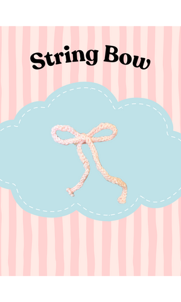
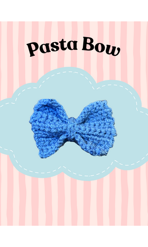
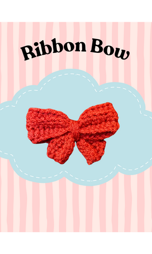
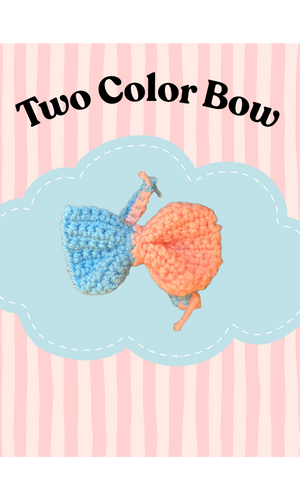

<!DOCTYPE html>
<html>
    <head>   <link rel="icon" type="image/png" href="buttons/logo.png">
        </head>
        <title> How to do's</title>
        <body>
            <style>
                body {
                font-family: 'Times New Roman', Times, serif;
                background-color:#fdeaf6;
                margin: 0;
                padding: 0;
                }
                
                .video{
                    width:260px;
                    height: auto;
                }


               
            
            .header {

                left:0px;
                top:0px;
                width:100%;
                z-index: 1000;
                background-color:#ff66c4da ;

                
                }


            .header img{
                display:block;
                width:100%;
                height:auto;
            }
            
             .headerstuff{
                height: 80px;
                object-fit:contain;
            }

            

         

            .about-usbutton:hover, .diy-button:hover, .homebutton:hover, .termsbutton:hover{
                cursor: pointer;
                color:rgb(253, 255, 129);
                transform: scale(1.40);
                transition-duration: 0.22s;
            }


            .button-class{
                display:flex;
                gap:30px;

                
            }

            .about-usbutton:active,.diy-button:active, .homebutton:active, .termsbutton:active{
                color:black;
                transition-duration: 0.2s;
            }
            
            .homebutton{
                width:100%;
                height:auto;
                background-color:transparent;
                border:none;
                color:rgb(255, 255, 255);
                font-size: 20px;
                font-family: "Baloo 2", cursive;
                margin-left: 10px;
            }
            .about-usbutton,.diy-button, .termsbutton{
                width:100%;
                height:auto;
                background-color:transparent;
                border:none;
                color:rgb(255, 255, 255);
                font-size: 20px;
                font-family: "Baloo 2", cursive;
                
            }
                
            
            </style>

        </body>
    </head>
</html>


<div class="header">
            

      

        <div class="button-class">
            
            <div>
                <a href = "index.html">
                    <button class="homebutton">Home</button>

                </a>
            </div>

            <div>
                <a href="about-us.html">
                    <button class="about-usbutton">About us</button>
                </a> 
            </div>

            <div>
                <a href ="diy.html">
                    <button class="diy-button">Bow Making</button>
                </a>
            </div>

            <div>
                <a href = "terms.html">
                    <button class="termsbutton">Terms</button>

                </a>
            </div>

      
        </div>
    </div>
            
    Learn how to make step by step bow designs. (will add more videos later)

</div>

<div>
    <p> <strong>Simple String Bow<strong></p> 
        <div>
    <p>1. Get any color string <br> 2. Make a single slip knot (basically a knot but don't pull it fully) <br>3. Single crochet 30 times (or however many you would like)<br>4. Cut excess string and tie two knots to secure the end <br>5. Tie the finished result into a ribbon</p>
    
    <video controls src = "stringbow.mp4">
    </div>

    <div>
    <p> Pasta Bow</p> 
    <p>The process of starting a pasta bow is similar the the string bow<br>1.Get any color string <br>2. Make a single slip knot <br>3. Single crochet like 10 times (or however many you would like this will create the lenght of the rectangle)<br>4. At the very end single crochet one more time and loop around the previous loop<br>5. Single crochet 7 times (it has to be less than the lenght to make the rectangle shape)<br>6. When finished cut and secure a knot then put it aside <br>7. For the middle part of the bow you can just use regular string to tie it up OR you can single crochet like 7 and wrap it around the center</p>
    
    </div>
<div>
    <p> ribbon bow</p> 
    <p>1.Get any color string <br>2. Single Crochet 30 times <br>3. Add one extra turn then double crochet back <br>4. It should look like a longer rectangle<br>5. Tie into a ribbon shape </p>
    
</div>

<div>
    <p> Adding differnt paterns and colors</p> 
    <p>You can use any pattern you learned. <br> So where you would like to start alternating colors loop the current color out and take the other string and loop it into that string and just continue crocheting.</p>
    
</div>
<div>
